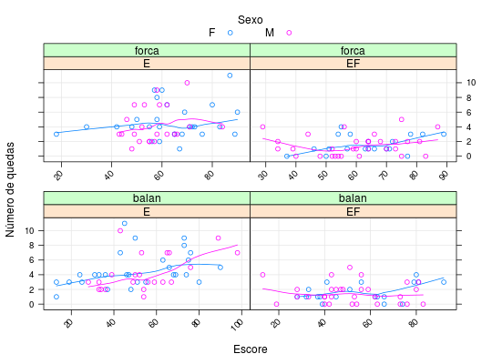
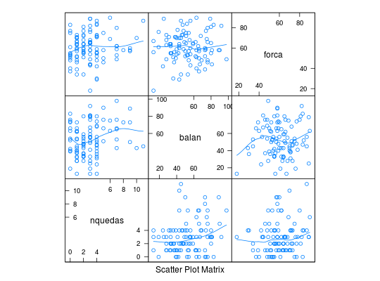

Dados provenientes de um estudo prospectivo com 100 indivíduos de pelo menos 65 anos de idade em boas condições físicas em que se avaliou o número de quedas num período de seis meses registrando, além das informações: tipo de intervenção realizada, sexo e escores de balanço e força. O objetivo do estudo é relacionar o número médio de quedas com o tipo de intervenção e as demais variáveis explicativas coletadas.
Um data.frame com 100 observações e 5 variáveis.
nquedasintervE: somente educação, EF: educação e
exercícios físicos.)sexoF: feminino e M: masculino).balanforcaPAULA (2004), Exercício 4.6.5, pág. 342.
Neter, J., Kutner, M. H., Nachtsheim, C. J., Wasserman, W. (1996). Applie Linear Regression Models (3tr ed.). Irwin, Illinois.
data(PaulaEx4.6.5)#> Warning: data set ‘PaulaEx4.6.5’ not foundstr(PaulaEx4.6.5)#> 'data.frame': 100 obs. of 5 variables: #> $ nquedas: int 1 1 2 0 2 1 0 0 2 2 ... #> $ interv : Factor w/ 2 levels "E","EF": 2 2 2 2 2 2 2 2 2 2 ... #> $ sexo : Factor w/ 2 levels "F","M": 1 1 2 2 1 2 2 1 2 2 ... #> $ balan : int 45 62 43 76 51 73 40 66 80 56 ... #> $ forca : int 70 66 64 48 72 39 54 37 81 60 ...library(lattice) xyplot(nquedas ~ balan + forca | interv, groups = sexo, data = PaulaEx4.6.5, xlab = "Escore", ylab = "Número de quedas", type = c("p", "g", "smooth"), scales = list(x = list(rot = 45, relation = "free")), auto.key = list(cex.title = 1, columns = 2, title = "Sexo"))splom(~PaulaEx4.6.5[, c("nquedas", "balan", "forca")], type = c("p", "smooth"))